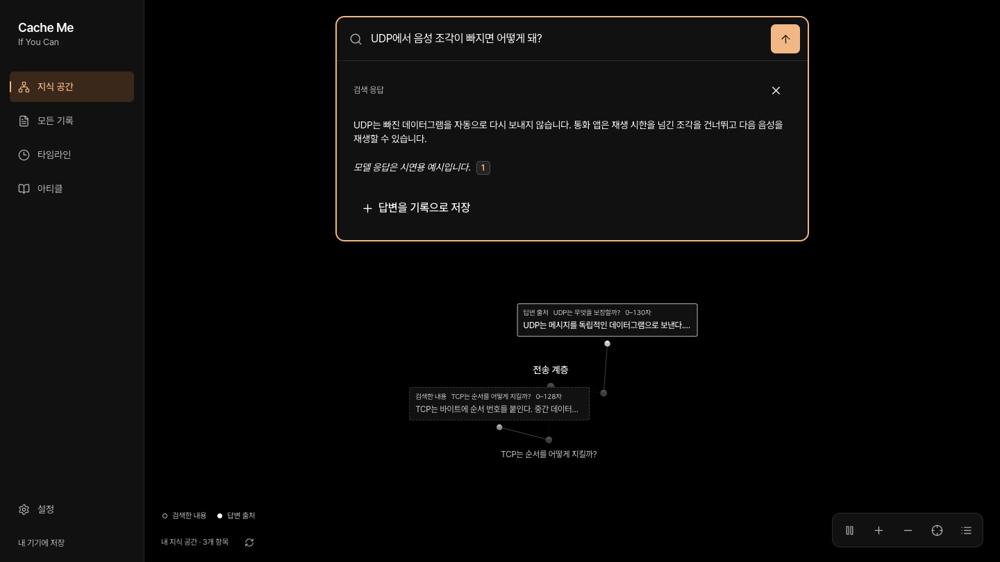
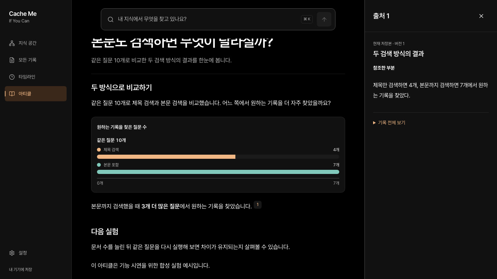

유형·주제 필터
‘모든 기록’에서 유형과 주제를 고릅니다. 저장일 최신순 또는 제목순으로 정렬하고 다음 목록으로 넘어갈 수 있습니다.
설계 문서 / 제품 기능
기록은 저장·조회·정정의 단위입니다. 지식 공간은 기록 사이의 연결과 검색 근거를 보여 주고, 아티클은 필요한 기록을 인용해 별도 글로 발행합니다.
저장 요청에서 지정한 내용을 나중에 따로 찾거나 수정할 수 있는 단위로 나눕니다. 각 기록은 독립된 ID와 본문 버전을 갖습니다. 제목과 유형은 선택 사항입니다.
저장 요청 예시 · “지금까지 배운 TCP와 UDP를 cache-me로 정리해줘.”
‘모든 기록’의 ‘새 기록’에서 Markdown 본문을 쓰고 미리 본 뒤 저장합니다. 편집 중 닫으면 변경한 초안을 버릴지 확인합니다. Codex에는 “한 문서로 남겨줘” 또는 “인용문은 원문대로 남겨줘”처럼 원하는 단위를 지정할 수 있습니다.
| 기록 유형 | 나중에 되찾을 내용 |
|---|---|
| 지식 | 새 개념의 설명, 두 방법의 차이, 해결 절차 |
| 경험·회고 | 직접 해 본 일, 관찰한 결과와 돌아본 생각 |
| 맥락 | 당시 프로젝트의 제약과 선택에 영향을 준 조건 |
| 아이디어·계획 | 다음 실험에서 해 보고 싶은 일과 진행 단계 |
| 결정 | 무엇을 선택했는지, 이유와 다시 검토할 조건 |
| 자료 | 다시 쓸 템플릿, 코드, 인용할 문서 원문 |
한 기록에 여러 유형을 붙이거나 유형을 비워 둘 수 있습니다. 네트워크처럼 여러 기록을 가로지르는 관심사는 ‘주제’로 묶습니다.
두 화면은 같은 일반 기록을 서로 다른 기준으로 보여 줍니다. 목록은 유형·주제와 정렬 순서를 사용하고, 타임라인은 실제 저장한 날짜로 기록을 묶습니다.
‘모든 기록’에서 유형과 주제를 고릅니다. 저장일 최신순 또는 제목순으로 정렬하고 다음 목록으로 넘어갈 수 있습니다.
‘타임라인’에서 월을 고르면 실제로 저장한 날에 따라 기록이 묶입니다. 금요일 일을 월요일에 적었다면 월요일에서 찾습니다.
‘경험·회고’나 ‘결정’으로 좁혀 당시 조건과 이유를 읽습니다. 후속 실험이 끝났다면 새 관찰을 남기고 두 기록의 관계를 표시할 수 있습니다.
목록·타임라인의 유형과 주제 필터는 서로 이어집니다. ‘지식 공간’에서 새로 하는 질문은 전체 기록을 대상으로 합니다.
주제 노드는 연결된 기록을 모읍니다. 기록을 구성하는 세부 항목은 특정 문단의 원문 위치를 가리키므로, 선택하면 해당 버전의 ‘참조한 부분’을 읽을 수 있습니다.
TCP는 순서를 어떻게 지킬까?
UDP는 무엇을 보장할까?
데이터그램과 전달 순서
실시간 음성
UDP는 메시지를 독립적인 데이터그램으로 보낸다. 도착 순서나 전달 성공을 보장하지 않으며, 빠진 데이터그램을 자동으로 재전송하지 않는다.

저장 후 분류 작업이 본문에 맞는 기존 주제를 찾아 연결하고, 새로 구별할 범위가 뚜렷하면 주제를 만듭니다. 기록에 세부 항목이 있으면 어느 기록의 일부인지도 표시됩니다. 두 주장 사이의 ‘뒷받침함’, ‘정정함’ 같은 관계는 사용자가 근거와 함께 명시합니다.
확정하기 어려운 주제는 보류될 수 있습니다. 주제 이름이나 잘못 연결된 기록을 정정하려면 Codex에서 대상을 지정해 요청합니다. 연결 작업이 아직 끝나지 않았거나 실패했을 때도 이미 저장한 본문을 열 수 있습니다. WebGL을 쓸 수 없는 환경에서는 목록으로 연결을 살펴봅니다.
질문 후 그래프에는 이번 검색에서 읽은 본문 구간이 표시됩니다. 검색 중 읽은 구간은 ‘검색한 내용’, 답변을 뒷받침해 번호가 붙은 구간은 ‘답변 출처’로 구분합니다.
검색 예시 · “UDP에서 음성 조각이 빠지면 어떻게 돼?”

설정에서 먼저 검색 모델과 기록의 검색 준비 상태를 확인합니다. 준비 중인 기록과 검색 준비에 실패한 기록이 따로 표시됩니다. 답변 생성에는 연결한 모델 계정이 필요합니다.
검색할 수 있는 상태여도 읽은 근거가 질문을 뒷받침하지 않으면 확인 범위가 제한됩니다. 유형이나 시점을 기억한다면 목록·타임라인에서 해당 기록을 직접 열 수 있습니다.
인용은 글을 쓸 때 읽은 기록의 버전과 구간을 기억합니다. 읽다가 번호를 누르면 넓은 화면은 옆 패널, 좁은 화면은 대화상자로 출처를 보여 줍니다. 닫으면 읽던 자리의 번호로 돌아갑니다.
인용 당시 · TCP 공부 기록의 첫 저장본
TCP는 수신한 데이터를 순서대로 애플리케이션에 전달한다.
나중에 같은 기록에 재전송 설명을 덧붙여도 이 인용은 당시 문장을 가리킵니다. 원자료 변경 여부를 확인하고, 필요하면 현재 기록도 따로 엽니다.
아티클은 본문과 순서 있는 인용 목록을 가진 독립 문서입니다. 발행하면 ‘아티클’에 글 주소가 생기고, 개정하면 같은 주소에서 새 버전을 읽을 수 있습니다. 인용한 원자료는 계속 일반 기록에서 관리합니다.
작성 요청 예시 · “방금 저장한 두 기록으로 TCP와 UDP의 차이를 비교하는 아티클을 써줘.”
Codex는 관련 기록의 원문 구간을 읽고 부족한 설명을 공식 문서나 논문으로 보강합니다. 초안 요청은 대화에서 마치고, 발행 요청은 등록한 아티클의 주소를 돌려줍니다.

| 이해하고 싶은 내용 | 글에서 볼 수 있는 자료 |
|---|---|
| 여러 조건의 차이 | 한 항목씩 비교하는 표. TCP와 UDP의 순서 보장·재전송 여부 비교에 적합합니다. |
| 동작하는 순서 | 한 번에 한 단계씩 읽는 흐름도. 요청부터 결과까지 순서를 따라갑니다. |
| 숫자의 크기와 구성 | 같은 기준축을 쓰는 비교 막대, 부분을 합산하는 누적 막대. 수치에는 단위와 필요한 분모를 함께 표시합니다. |
긴 글은 접이식 목차로 이동할 수 있습니다. 외부 원문을 인용하면 먼저 제목과 참고 요지를 보여 주고, 원문을 선택해 새 탭에서 엽니다.
cache-me는 사용자가 지정한 내용을 기록으로 저장·조회·정정하고, cache-me-article은 관련 기록을 읽어 아티클을 작성·발행합니다. Codex가 요청에 맞는 스킬의 절차에 따라 로컬 MCP 도구를 호출합니다.